2．热方程与傅里叶级数
19世纪的第一个大步，并且是真正极为重要的一步，是由傅里叶（1768—1830）迈出的。傅里叶年轻时是一个很出色的数学学者，但他专志于当一个军官。因为他是一个裁缝的儿子而被拒绝任命，他便转谋教士职位。当他曾经就读过的军事学校委之以教授职位时他接受了，同时数学就变成了他终生的爱好。
像他同时代的其他科学家一样，傅里叶从事热流动的研究。对热流有兴趣，作为实际问题，在工业上是为了处理金属，作为科学问题，是企图确定地球内部的温度，这温度随时间的变化，以及其他同类问题。1807年(1)，他向巴黎科学院呈递了一篇关于热传导的基本论文，这篇论文经拉格朗日、拉普拉斯和勒让德审评后被拒绝了。但科学院的确想鼓励傅里叶发展他的思想，所以把热传导问题定为将于1812年授予高额奖金的课题。傅里叶在1811年呈递了修改过的论文，受到上述诸人和另外一些人审评，得到了奖金，但因受到缺乏严密性的评论而未发表在当时的科学院的《报告》里。傅里叶对他所受到的待遇感到愤恨。他继续对热的课题进行研究，在1822年发表了数学的经典文献之一———《热的解析理论》（Théorie analytique de la chaleur）(2)，编入了他实际上未作改动的1811年论文的第一部分。此书是傅里叶的思想的主要出处。两年以后，他成为科学院的秘书，于是能够把他1811年的论文原封不动地发表在《报告》(3)里。
在吸收或释放热的物体内部，温度分布一般是不均匀的，在任何点上都随时间而变化。所以温度T是空间和时间的函数。函数的准确形式依赖于物体的形状、密度、材料的比热、T的初始分布（即在时刻t＝0时T的分布）以及保持于物体表面上的条件。傅里叶在他的书中考虑的第一个主要问题是在均匀和各向同性的物体内确定作为x，y，z，t的函数的温度T。根据物理原理他证明了T必须满足偏微分方程
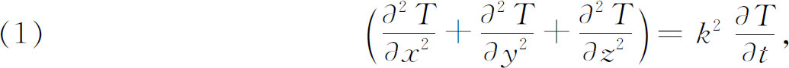
叫做三维空间的热方程，其中k2是一个常数，其值依赖于物体的质料。
傅里叶当时解决了特殊的热传导问题。我们将考虑一种对他的方法说来是典型的情形，即对两端保持在温度0°，侧面绝热因而无热流通过的柱轴，求解方程（1）的问题。因为这根轴只涉及一维空间，故（1）变成
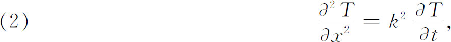
附以边界条件
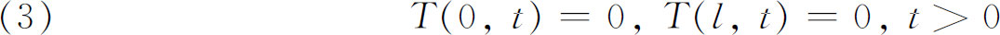
和初始条件
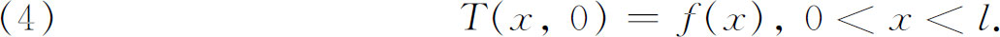
为解出这个问题，傅里叶用了变量分离法。他令
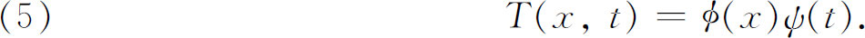
代入微分方程后，得到
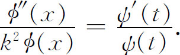
然后他阐明（参看第22章的［30］），这两个比值必须是常数，假定为-λ，因此有
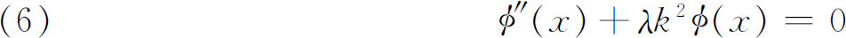
和
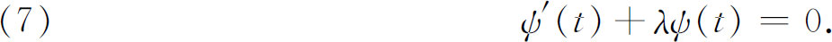
因此，根据（5），边界条件（3）蕴涵着
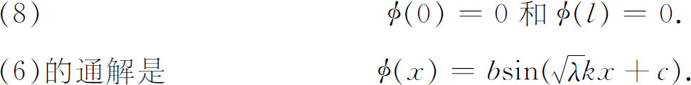
条件ø（0）＝0蕴涵着c＝0。条件ø（l）＝0给λ加上了限制，即
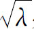
必须是π/kl的整数倍。所以λ有无穷多个可取的值λν，或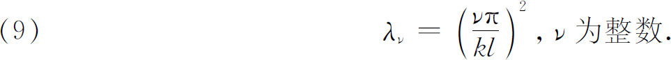
这些λν就是我们现在称作的本征值或特征值。
因为（7）的通解是指数函数，但现在λ限于取λν，于是由（5），傅里叶到此得到
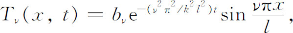
其中bν目前表示在b位置上的常数，而ν＝1，2，3，…。然而方程（2）是线性的，所以诸解的和仍然是解。故可以断言
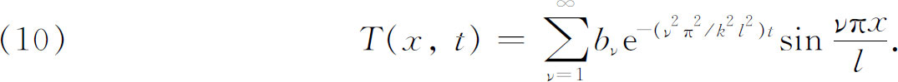
为了满足初始条件（4），对t＝0必须有
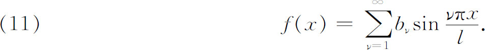
于是傅里叶面临着这样的问题：f（x）能表示成三角级数吗？特别是bν能确定吗？
傅里叶进而回答这些问题。虽然那时他略为意识到有严密性的问题，但他仍以18世纪的风气形式地进行着。为了领悟傅里叶的工作，为简单起见，我们将设l＝π，这样我们考虑
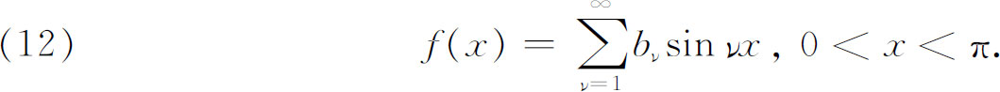
傅里叶把每个正弦函数按麦克劳林定理展开为幂级数；即他用
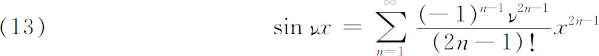
替换（12）式中的sin νx。然后用一个当时认为无问题的变换求和次序的运算，他得到
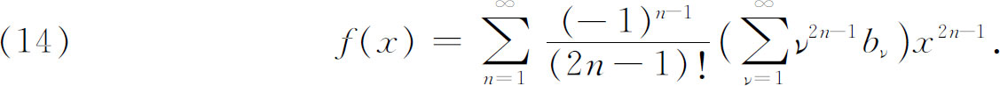
这样f（x）就表示成了x的幂级数，这隐含着在傅里叶讨论的可容许函数f（x）上加了一个事先没有假定的强限制，即这个幂级数必须是f（x）的麦克劳林级数，因此
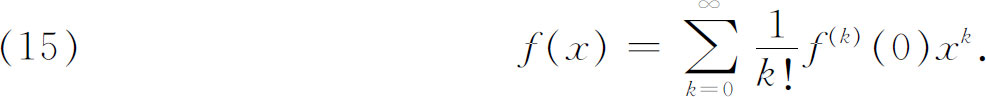
令（14）和（15）中x的同次幂的系数相等，傅里叶发现，对偶数k，f（k）（0）＝0，而除此之外，则有
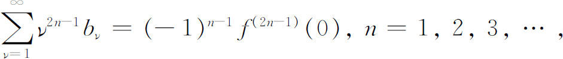
现在f（x）的诸导数是已知的，因为f（x）是已给的一个初始条件。所以bν是无穷线性代数方程组里的未知数的一个无穷集合。
在先前的一个问题中，傅里叶面临着同类的方程组，那里他取前k项和前k个方程的右端常数，解前k个方程得bν，k，表示bν的近似值，得到了bν，k的一般表达式时，他就大胆地下结论说：
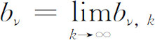
。然而，这一次他要确定bν却有许多困难。他对几个不同的f（x），用非常复杂的、包含发散表达式的程序说明了如何确定bν。用这些特殊情形作为指导，他得到了bν的、含有无穷乘积及无穷和的一个表达式，傅里叶觉得这个表达式相当无用。经过更为大胆和富于创造性的、虽然往往又是含糊的几步，他得到了公式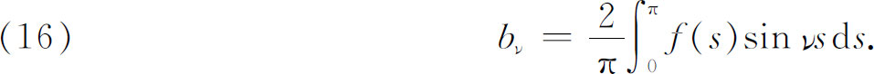
这结论在一定程度上说并不是新的。我们已经说到（第20章第5节），克莱罗和欧拉已经怎样把某些函数展开为傅里叶级数并得到公式
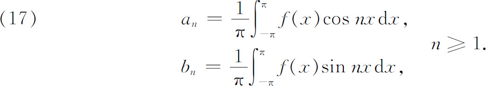
此外，傅里叶这样得到的结果是很局限的，因为他假定了f（x）有麦克劳林展开，这意味着有无穷阶导数。最后，傅里叶方法确实是不严密的，并且比欧拉的方法更为复杂。傅里叶不得不用无穷线性方程组，而欧拉却用三角函数的性质做得更为简单。
但这时傅里叶作了一些值得注意的观察。他注意到每一个bν可以解释为x取值0到π时，曲线y＝（2/π）f（x）sin νx下方的面积。这样一个面积即使对很随意的函数都是有意义的。这种函数不必是连续的，或者只要从图形上知道就可以了。所以傅里叶下结论说，每一个函数都可以表示为
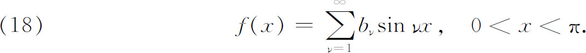
当然，这个可能性除丹尼尔·伯努利以外，已被18世纪的名家否定了。
傅里叶对其前人的工作知道多少是不清楚的。在1825年的文章中他说拉克鲁瓦已告诉他关于欧拉的工作，但他没有说何时告诉他的。无论如何，傅里叶并没有被前人的意见所吓住。他选取了大量的函数，对每个函数计算头几个bν，并对每个函数作出正弦级数（18）的头几项和的图形。从这一图形他得出结论说，不管在区间0＜x＜π外怎样，这个级数在0＜x＜π上总是表示f（x）的。在书中（第198页）他指出，两个函数可在一给定的区间上相合，但不一定在此区间外相合。看不到这一点，说明了早期的数学家为什么不能接受任意一个函数可展开为三角级数的原因。在目前的情形下，级数真正给出的是函数在0到π区间上的值，在区间外则周期地重复着。
傅里叶一旦得到了上述关于bν的简单结果，他就像欧拉一样了解到每个bν可以由级数（18）乘以sin νx，再从0到π积分而得到。他又指出这个程序可以应用于表达式
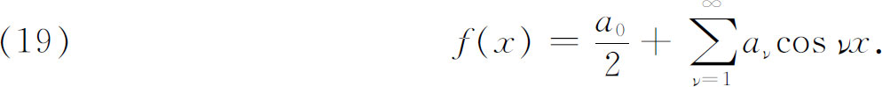
他接着考虑任何f（x）在区间（-π，π）的表达式。级数（18）表示一个奇函数［f（x）＝-f（-x）］，而级数（19）表示一个偶函数［f（x）＝f（-x）］。但任何函数可以表示为一个奇函数f0 （x）与一个偶函数fe（x）之和，这里
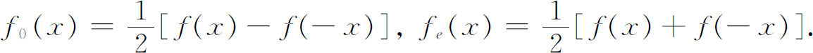
于是任何f（x）在区间（-π，π）上可以表示为
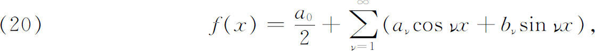
而其系数可经遍乘cos νx或sin νx再从-π到π积分来确定，这就给出了（17）。
傅里叶对“任意”的函数可以表示成（20）那样的级数一事从未给出过任何完全的证明。在那本书中他给出一些严密的论证，在他关于这事的最后讨论里（第415节、416节和423节），给出了一个证明的概要；但即使在那里，傅里叶仍没有说出一个函数可以展开为三角级数必须满足的条件。虽然如此，傅里叶对这种可能性的信念是表现于整本书里的。他还说(4)，不管f（x）怎样，不管是否可给f（x）以解析表达式，不管函数是否服从任何正规的法则，他的级数总是收敛的。傅里叶关于任何函数可以展开为傅里叶级数的信念是建立在前述几何证据上的。关于这点他在该书（第206页）中说道：“为了证实新结果的真实性，为了明白地给出分析学常用的表达形式，没有什么比几何图形对我们更适宜了。”
傅里叶的工作渗透到几个主要的进展之中。除促进偏微分方程的理论外，他迫使函数概念作一种修改。假设函数y＝x在区间（-π，π）内由傅里叶级数（20）表示出来，则这级数的性态就在每个长为2π的区间上重复着。因此这级数给出的函数看起来像图28.1所显示的那样。这样的函数不能用单个（有限的）解析式表示，然而傅里叶的先驱者都曾坚持一个函数必须是可用单个式子表示的。因为对所有x，整个函数y＝x不能用级数表示，他们就不能看出任意的非周期函数怎样可用这类级数来表示了。虽然欧拉和拉格朗日实际上都曾经对特殊的非周期函数这样做过。傅里叶明白，他的级数也可以表示在区间（0，π）或（-π，π）的不同部分有不同解析式的函数，不管这些表达式互相是否连续地接合着。最后他指出，在丹尼尔·伯努利的赞助下，他的工作解决了关于弦振动问题的解的争论。傅里叶的工作标志着人们从解析函数或可展成泰勒级数的函数中解放了出来。以下的事情也是重要的：一个傅里叶级数在一整段区间上表示一个函数，而一个泰勒级数仅在函数是解析的点附近表示该函数（虽然在特殊情形下其收敛半径可以是无穷大）。
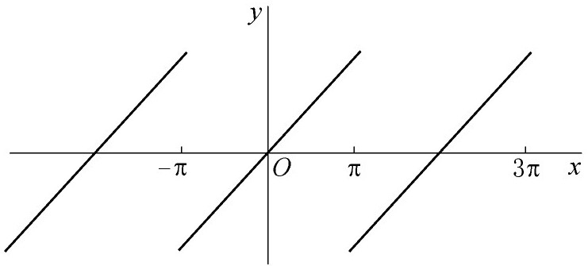
图28.1
我们已经注意到，傅里叶1807年的论文没有很好地被巴黎科学院接受，文中他坚持认为任意函数可以展开为三角函数。拉格朗日特别坚决地否认这种展开的可能性。虽然他仅仅批评了该论文缺乏严密性，但他确实被傅里叶所持的函数的普遍性所困惑，因为拉格朗日仍然相信函数是由其在任意小区间上的值所决定的（这对解析函数是正确的）。事实上拉格朗日重返到弦振动问题，并且没有比他早期工作显示出更好的洞察力，而坚持为欧拉关于任意函数不可能展开为三角级数的争论辩护。泊松后来确实断言拉格朗日指出过任意函数可以表示为傅里叶级数，但泊松是妒忌傅里叶的，他说这话是为了抢夺傅里叶的名誉而归之于拉格朗日。
傅里叶的工作还弄明白了另一件在18世纪欧拉和拉格朗日的著作中还不清楚的事情。这些人为了解一些特殊问题，已经把函数按贝塞尔函数或勒让德多项式展开为级数了。函数可以展开为像三角函数、贝塞尔函数、勒让德多项式这样一些函数的级数，这个普遍性事实是由傅里叶的工作揭露出来的。他进一步说明了施加于偏微分方程的解的初始条件可以怎样被满足，因此推进了解这类方程的技术。傅里叶1811年的那篇论文，虽然到1824年至1826年才发表，但当时对别人是易于接受的，他的思想最初是勉强地得到承认，但最后赢得了赞许。
傅里叶的方法立即被泊松（1781—1840）吸取。泊松是19世纪最大的分析学家之一，又是第一流的数学物理学家。虽然他父亲要他学医，但他却先后成为19世纪法国数学家的发源地———多科工艺学校的学生和教授。他从事于热的理论方面的工作，是弹性的数学理论的奠基人之一，又是最先提出把引力位势理论移植到静电磁学的人之一。
泊松对傅里叶关于任意函数都可以展开为函数的级数的证据有极深刻的印象，以致他相信所有偏微分方程都可以用级数展开来求解；这级数的每一项本身是一些函数的乘积，每个函数是一个独立变量的函数（参看［10］）。他想，这些展开式包括了最一般的解。他还相信，如果一个展开式发散，就意味着应当寻找一个以其他函数表示出的展开式。当然他是太过分地乐观了。
大约从1815年起泊松本人解决了许多热传导问题，并使用了按三角函数、勒让德多项式、拉普拉斯曲面调和函数的展开式。这工作的某一些我们将会在以后碰到。泊松关于热传导方面的许多工作表述在他的书《热的数学理论》（Théorie mathématique de la chaleur，1835）中。